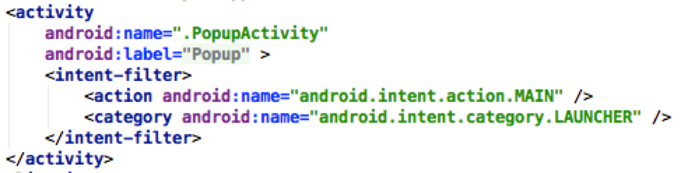

TP1 - Éléments Graphiques de base et Intents
Télécharger PDF

Objectifs du TP
Création et manipulation d’éléments graphiques de base dans Android, et familiarisation avec la notion d’intent, implicite et explicite.
Outils et Versions
- Android Studio Version: 3.0.1
- Android : Version 5.0.1 ( API 21 )
I. View et ViewGroup
1. Le Composant View
La classe View représente la classe de base pour la création d’une interface graphique en Android. C’est la classe mère de tous les widgets (éléments graphiques), utilisés pour créer des composants graphiques interactifs (boutons, champs texte, champs de saisie…). Une vue occupe un espace rectangulaire sur l’écran, responsable de la gestion des évènements initiés par l’utilisateur. Une sous-classe ViewGroup est définie par Android, représentant la classe de base pour tous les layouts (dispositions), qui sont des conteneurs invisibles qui rassemblent plusieurs View ou ViewGroup, et définissent leur emplacement dans l’écran (détaillés dans la section 2 : Les Layouts ).
2. Les Layouts
Chaque élément d’une interface graphique est soit un objet View, soit ViewGroup. Les dispositions de ces éléments dans l’écran sont précisées principalement par des Layouts. Un Layout est un ViewGroup qui regroupe un ensemble de widgets ou d’autres layouts, permettant ainsi de définir leur disposition sur l’écran de la fenêtre principale. Parmi les layouts existants, on cite le FrameLayout, LinearLayout, RelativeLayout…
II. Exercice 1 : Composants Graphiques de Base
1. Objectif
L’objectif de cette première partie est de réaliser une application de calcul d'IMC (Indice de Masse Corporelle) ayant une interface semblable à ce qui suit (veiller à respecter les tailles et emplacements des éléments graphiques):
- Activité 1 : Commencer par créer l’interface graphique, identique à la figure qui précède. Lancer l’émulateur, et vérifier que le rendu correspond à ce qui est demandé.
2. Comportement du bouton
Soit le bouton défini dans le fichier main.xml, dont l’identifiant est b_calcul. Pour manipuler ce bouton, trois méthodes principales sont en général utilisées:
Méthode 1: Surcharge du Listener du bouton
En Java, un Listener (écouteur) est un objet permettant au programmeur de réagir suite aux actions de l’utilisateur (clic de souris, touche du clavier, etc.). Dans notre cas, nous avons besoin d’un écouteur pour le clic sur le bouton, appelé onClickListener. Listener est une interface, qui fournit des méthodes qui doivent être implémentées par le programmeur. Par exemple, le onClickListener contient une méthode onClick, qu’on doit implémenter pour définir le comportement de notre bouton.
- 1 : Créer un attribut dans votre activité de type Button :
private Button bCalcul;
- 2 : Dans la méthode onCreate(), initialiser l’attribut bConvert en lui associant le bouton créé dans le main.xml :
this.bCalcul = (Button) this.findViewById(R.id.b_calcul) ;
- 3 : Utiliser le code suivant pour définir le comportement du bouton bConvert (de préférence à l’intérieur de la méthode onCreate).
this.bCalcul.setOnClickListener(new OnClickListener() { @Override public void onClick(View v) { //comportement de votre bouton } });
Méthode 2 : Définition d’une méthode propre au bouton
Il existe une manière moins encombrante de définir le comportement du bouton, mais qui ne peut pas s’appliquer à tous les évènements, seulement au clic.
- 1 : Dans l’élément XML du bouton, ajouter l’attribut :
android:onClick="calcul"
Cet attribut indique qu’il existe une méthode dans le code de l’activité, appelée calcul, qui définit le comportement du bouton au clic.
- 2 : Dans le code de l’activité, ajouter la méthode suivante :
public void calcul(View v){ // comportement du bouton }
La méthode calcul ainsi définie a une signature particulière : elle doit obligatoirement être publique, retourner void et prendre comme paramètre un objet de type android.view.View (vous remarquerez que cette méthode a la même signature que la méthode onClick, surchargée dans la première méthode). Il faut noter également que la vue v passée en paramètre, correspond à l’objet cliqué.
Remarque
Si vous utilisez cette solution, il est inutile de définir une variable de type Button en Java, et de l’associer au bouton défini dans le fichier XML.
Méthode 3 : Implémentation de l’interface OnClickListener
Il est possible d’utiliser l’héritage pour surcharger la méthode onClick, sans passer par l’appel à la méthode setOnClickListener. Il suffit de suivre les étapes suivantes :
- 1 : Votre activity doit implémenter l’interface OnClickListener. Ceci est réalisé en transformant la signature de votre classe activité comme suit, par exemple :
public class IMC extends Activity implements OnClickListener {…}
-
2 : Créer l’attribut bCalcul de type Button et l’associer à l’élément XML b_calcul, comme dans la méthode 1.
-
3 : Définir l’activité courante comme étant l’écouteur du clic sur le bouton bCalcul :
bCalcul.setOnClickListener(this);
- 4 : Ajouter la méthode onClick dans votre activité, comme suit :
public void onClick(View v) { if (v.getId()==R.id.b_calcul){ //Comportement du bouton b_convert } }
Attention
Cette méthode sera commune à tous les éléments cliquables, il faut donc distinguer le comportement selon l‘identifiant de l‘élément cliqué.
Cette méthode peut s’avérer utile dans le cas où on voudrait par exemple regrouper les implémentations de tous les boutons de l’interface dans la même méthode, ou si plusieurs boutons partageaient une partie de leur comportement.
3. Comportement d’un EditText
Un EditText est un objet graphique qui permet à l’utilisateur de saisir une chaîne de caractères, utilisable par l’application. De même que pour le bouton (ainsi que tous les éléments graphiques que nous désirons utiliser dans notre application), nous devons définir et initialiser un objet Java associé au champs EditText :
- 1 : Créer un attribut dans votre activité de type EditText:
private EditText eEntry;
- 2 : Dans la méthode onCreate(), initialiser l’attribut eEntree en lui associant le champs de saisie créé dans le main.xml :
this.eEntry = (EditText) this.findViewById(R.id.e_entry) ;
- 3 : Définir son comportement. Pour un champs de saisie, les principales fonctionnalités sont :
- La lecture du contenu : pour cela on utilise la méthode :
String s = eEntry.getText().toString();
* La modification du contenu :
eEntry.setText("Nouveau texte ");
4. Comportement d’un TextView
Un TextView est un objet graphique qui permet d’afficher une chaîne de caractères non-éditable par l’utilisateur. Le TextView peut être utilisé par l’application exactement de la même manière qu’un EditText.
5. Comportement d’un Bouton Radio
Un bouton radio est un bouton à deux états qui peut être soit coché (checked) ou décoché (unchecked). Les boutons radios sont en général utilisés dans un groupe RadioGroup. Au sein d’un même groupe, un seul bouton radio peut être coché.
Pour gérer l’état d’un bouton radio, il faut suivre les étapes suivantes :
-
Créer un attribut de type RadioButton dans votre activité (par exemple rHomme).
-
L’associer au bouton radio approprié de votre interface en utilisant la méthode findViewById.
-
Pour tester l’état de votre bouton radio, appeler la méthode isChecked().
if (rHomme.isChecked() ){ //traitement }
Pour mettre à jour l’état du bouton radio, utiliser la méthode setChecked(boolean etat). Par exemple, si on veut cocher l’élément radio1 et décocher radio2, on peut faire comme suit :
radio1.setChecked(true); radio2.setChecked(false);
Remarques
- 1 Pour utiliser les boutons radios, il est inutile de définir des variables en Java pour le RadioGroup.
- 2 Dans l’exemple précédent (4), si radio1 et radio2 se trouvent dans un RadioGroup, il est inutile de changer leurs deux états : le changement de l’état de l’un va automatiquement changer l’autre, puisqu’un seul peut être coché à la fois.
6. Manipulation des ressources
Couleurs
Pour ajouter une nouvelle couleur, il suffit de modifier le fichier colors.xml qui se trouve sous le répertoire values en insérant les lignes suivantes :
<resources> <color name="colorPrimary">#3F51B5</color> <color name="colorPrimaryDark">#303F9F</color> <color name="colorAccent">#FF4081</color> <color name="colorRed">#D50000</color> <color name="colorGreen">#2E7D32</color> <color name="colorOrange">#E65100</color> </resources>
Pour changer la couleur d'un TextView dynamiquement, il faut utiliser la fonction setTextColor(int color) de la classe TextView.
exemple :
textInterp.setTextColor(getResources().getColor(R.color.colorRed));
- activité 2 : Définir maintenant le comportement des différents composants de votre interface en utilisant la méthode de votre choix.
Notes
-
1 Le calcul d'IMC se fait comme suit: IMC = masse / taille²
-
2 L'interprétation de l'IMC se fait selon les critères définis par l'Organisation mondiale de la Santé.
III. Exercice 2 : Intents
1. Objectif
Durée estimée de l’exercice : au plus 1h
L’objectif de cette deuxième partie est de modifier l’application de la première partie pour obtenir le résultat suivant :
2. Intents: Définition
Une application Android peut contenir plusieurs activités. Une activité utilise la méthode setContentView pour s’associer avec une interface graphique. À la base, les activités sont indépendantes les unes des autres, cependant, elles peuvent collaborer pour échanger des données et des actions.
Typiquement, l’une des activités est désignée comme étant la première à être présentée à l’utilisateur quand l’application est lancée : on l’appelle l’activité de démarrage. Toutes les activités interagissent en mode asynchrone.
Le passage d’une activité à une autre est réalisé en demandant à l’activité en cours d’exécuter un Intent. Un intent est un message qui peut être utilisé pour demander une action à partir d’un composant de l’application. Il permet invoquer des Activités, des Broadcast Receivers ou des Services. Les différentes méthodes utilisées pour appeler ces composantes sont les suivantes :
- startActivity(intent) : lance une activité.
- sendBroadcast(intent) : envoie un intent à tous les composants Broadcast Receivers intéressés.
- startService(intent) ou bindService(intent, …) : communiquent avec un service en arrière plan.
Un intent comporte des informations que le système Android utilise.
- Nom du composant à démarrer
- Action à réaliser : ACTION-VIEW, ACTION_SEND…
- Donnée : URI référençant la donnée sur laquelle l’action va agir
- Catégorie : Information supplémentaire sur le type de composants qui va gérer l’intent, par exemple : CATEGORY-BROWSABLE, CATEGORY-LAUNCHER…
- Extras : Paires clef-valeur qui comportent des informations additionnelles pour réaliser l’action demandée.
- Drapeaux (Flags) : Définissent la classe qui fonctionne comme métadonnée pour cet intent, ils peuvent indiquer comment lancer une activité et comment la traiter une fois lancée.
Il existe principalement deux types d’Intents : Intents explicites et intents implicites.
3. Intents Explicites
Les intents explicites spécifient le composant à démarrer par nom (nom complet de la classe). Ils permettent de démarrer un composant de votre propre application, car le nom de sa classe est connu. Par exemple: démarrer une autre activité en réponse à l’action d’un utilisateur.
Les principaux arguments d’un Intent explicite sont :
-
Le contexte déclenchant l’Intent (en général this, si on le lance à partir de l’activité de départ, ou bien
.this). -
La classe destination (en général
.class).
Il est typiquement appelé comme suit:
Intent myActivityIntent = new Intent (StartClass.this, EndClass.class) ; startActivity (myActivityIntent) ;
Les données partagées entre les deux activités peuvent être envoyées sous forme d’Extras. Un extra est un élément sous forme de clef/valeur, que l’activité principale envoie à l’activité destination. Il est créé comme suit :
myActivityIntent.putExtra("clef","valeur");
Attention, tous les extras doivent être associés à l’intent avant de déclencher ce dernier dans le startActivity, bien sûr.
Il est également possible de démarrer une activité avec un résultat, en établissant un lien bidirectionnel entre deux activités. Pour recevoir un résultat à partir d’une autre activité, appeler startActivityForResult au lieu de startActivity.
L’activité de destination doit bien sûr être conçue pour renvoyer un résultat une fois l’opération réalisée, et ce sous forme d’Intent. L’activité principale le recevra et le traitera dans la méthode prédéfinie onActivityResult.
Voici un exemple d’un intent avec résultat :
-
Activity1
-
Activity2
Le résultat obtenu par cet bout de code est le suivant :
- Activité 3 Commencer par créer l’interface graphique de la deuxième activité. Implémenter ensuite le code du bouton back, qui permet de revenir à l’activité principale en affichant le résultat trouvé dans un toast.
4. Intents Implicites
Les intents implicites ne nomment pas un composant spécifique, mais déclarent une action à réaliser. Ils permettent à un composant d’une application d’appeler un autre composant, même s’il se trouve dans une autre application.
Exemple : montrer à l’utilisateur un emplacement sur une Map.
Les principaux arguments d’un Intent implicite sont :
-
Action : l’action à réaliser, peut être prédéfinie (ACTION_VIEW, ACTION_EDIT, ACTION_MAIN…) ou créée par l’utilisateur.
-
Donnée : Les données principales sur lesquelles on va agir, tel que le numéro de téléphone à appeler.
Il est typiquement appelé comme suit:
Intent myActivityIntent = new Intent (<action>, <donnee>) ; startActivity (myActivityIntent) ;
Un intent implicite se comporte comme suit:
- 1. Activité A crée un Intent avec une action et le passe en paramètre à startActivity.
- 2. Le système Android cherchent toutes les applications pour trouver un Intent Filter qui correspond à cet Intent.
- 3. Quand une correspondance est trouvée, le système démarrent l’activité (Activity B) en invoquant sa méthode onCreate et en lui passant l’intent.
Les intents implicites utilisent la notion de Intent Filter pour trouver l’activité destination à déclencher. Un Intent Filter est une expression dans le fichier Manifest d’une application qui spécifie le type d’intents que le composant veut recevoir. Il permet aux autres activités de lancer directement votre activité en utilisant un certain Intent.
Si vous ne déclarez pas d’Intent Filters à votre activité, elle ne pourra être déclenchée que par un Intent Explicite. Il est néanmoins recommandé de ne pas déclarer d’Intent Filters pour les services, car cela peut causer des problèmes de sécurité.
Voici un exemple d’Intent Filter : 
Voici un ensemble d’actions communément utilisées :
Attention
Attention, la plupart des actions nécessitent des permissions à ajouter dans le fichier manifest, par exemple, pour autoriser votre activité à déclencher un appel, il faut ajouter la ligne :
``` xml <uses-permission android:name="android.permission.CALL_PHONE"></uses-permission> ```
Exemple d’un Intent implicite qui permet d’envoyer un message texte :
La méthode resolveActivity permet d’éviter que l’application crashe si l’activité appelée n’existe pas. C’est une sorte de gestion d’exception.
Le résultat obtenu sera alors comme suit :
- Activité 4 : Implémenter ensuite le code du bouton call, qui permet de déclencher automatiquement un appel sur un numéro prédéfini.
Homework
Votre premier travail sera divisé en 2 parties : En premier lieu, vous allez découvrir le material design, le célèbre langage visuel défini par Google. Commencer par consulter sa documentation officielle :
https://www.google.com/design/spec/material-design/introduction.html
Lire attentivement les différentes recommandations et bonnes pratiques dictées par Google pour la conception d’interfaces graphiques.
En deuxième lieu, vous allez appliquer ce patron et les notions vues dans ce TP sur une simple application de commande de pizza dans un restaurant.
L'application aura une principale interface, où l'utilisateur doit introduire son nom, prénom et son adresse, choisir le type de pizza qu'il veut commander( Moyenne, Mini, Maxi) et les ingrédients à ajouter ( Fromage, champignon, etc.). L'application doit lui permettre ensuite d'envoyer un SMS (ou un email) au vendeur qui contient un récapitulatif de la commande. Ajouter ensuite une interface d'accueil ( Splash Screen) qui s'affiche pendant 5 secondes puis redirige l'utilisateur à l'interface principale.